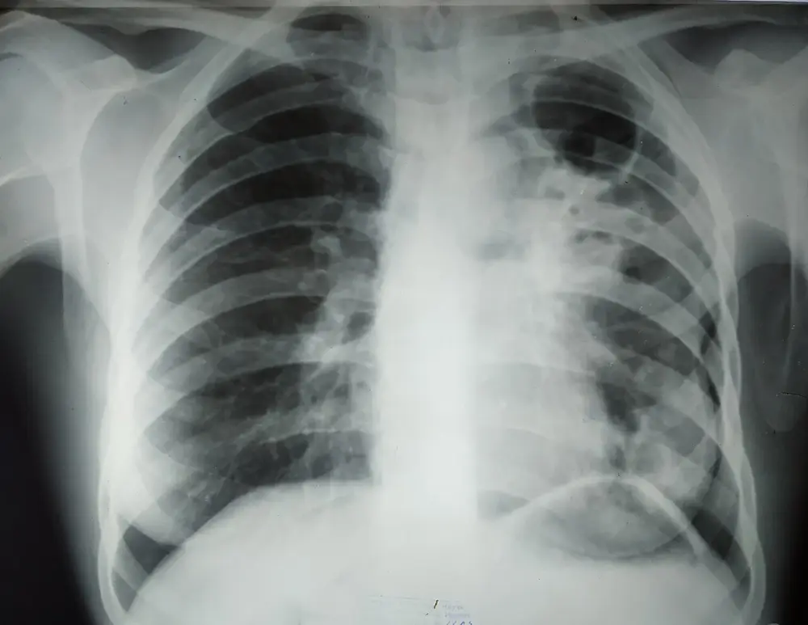
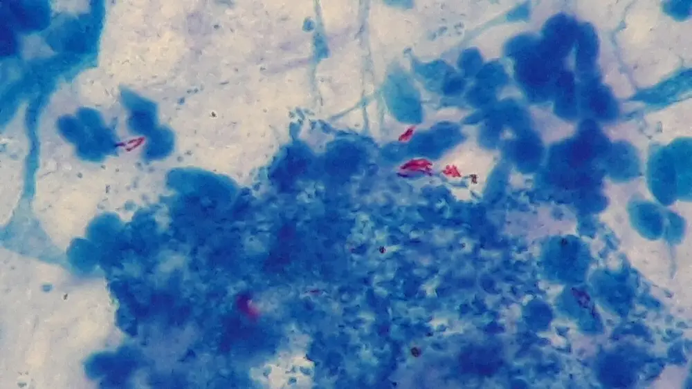

DX.7 — Tuberculose
Le rang reprend celui de la Phase A et ne représente pas une probabilité chiffrée. Devant des sueurs nocturnes, l’objectif est de distinguer une maladie tuberculeuse de l’infection sans manifestation clinique et d’identifier une éventuelle contagiosité respiratoire. Il est aussi de ne pas confondre amélioration des sueurs, fin d’isolement et guérison. Les associations fixes ci-dessous illustrent exclusivement les cas standards couverts par leurs notices suisses. [S4] [S6] [S7]
1. Définition
La tuberculose est une maladie causée par un agent pathogène du complexe Mycobacterium tuberculosis. Elle atteint le plus souvent les poumons mais peut toucher les ganglions, la plèvre, le système nerveux, les os et d’autres organes. Le guide suisse distingue cette maladie de l’infection tuberculeuse, réponse immunitaire persistante à des antigènes sans manifestation clinique de maladie. Un test immunologique positif ne suffit donc pas à attribuer des sueurs à une tuberculose active. [S4]
2. Épidémiologie et population concernée
La surveillance suisse et liechtensteinoise a reçu 544 déclarations en 2025, soit 6,0 cas pour 100 000 habitantsS5. L’Office fédéral de la santé publique (OFSP) a publié ces données le 21 septembre 2026S5. Elles décrivent la population et non la proportion de tuberculoses chez les personnes consultant pour une transpiration anormale. Les sources lues ne contiennent aucun pourcentage suisse représentatif de cette dernière situation. [S5]
Le contexte augmente la vigilance sans remplacer les prélèvements.3. Physiopathologie et lien avec le symptôme de départ
La transmission habituelle est due à l’inhalation d’aérosols émis par une personne atteinte d’une forme respiratoire infectieuse. Les bacilles inhalés atteignent les voies aériennes distales et rencontrent les macrophages ; une réponse immunitaire peut contrôler l’infection sans élimination certaine. Lorsque ce contrôle échoue, une maladie locale ou disséminée se développe. La maladie peut suivre une infection récente ou réapparaître longtemps après l’exposition. [S4] [S9]
La chaîne infectieuse explique les examens et les limites des symptômes. Les sueurs nocturnes appartiennent à un contexte inflammatoire, sans signature diagnostique. La perturbation, son exploration et la stratégie de correction sont reliées. La réaction fébrile relie inflammation, régulation et perte de chaleur. La sueur peut aussi venir du traitement, et ce n’est pas une rechute.4. Démarche diagnostique et diagnostics différentiels
La démarche consiste d’abord à exclure une détresse respiratoire, une hémoptysie menaçante et une atteinte neurologique. Une hémoptysie peut aussi avoir des causes concurrentes graves telles qu’embolie pulmonaire, cancer, aspergillose ou pneumopathie nécrosante. Le scanner et, selon le contexte, la bronchoscopie répondent à une autre question que l’identification du bacille. Le piège est d’attribuer tout saignement à une tuberculose présumée. [S17]
Les dangers respiratoires sont distingués avant les hypothèses fréquentes. Les diagnostics différentiels sont confrontés aux signes et aux prélèvements.5. Anamnèse ciblée et justification des questions
L’entretien recherche d’abord la gravité et la possibilité d’une transmission, puis caractérise les sueurs, la chronologie, les symptômes d’organe, les expositions et les traitements. Un interprète professionnel aide lorsque la langue empêche de distinguer toux, expectoration et hémoptysie ; le guide souligne que stigmatisation et différences d’expression peuvent masquer les symptômes. Le consentement et une explication compréhensible soutiennent le parcours. [S4]
Chaque question de l’anamnèse caractérise la sueur, la toux et l’exposition, puis modifie la décision.
Le contexte de prise explique une partie des échecs évitables. Cinq questions en deux minutes ciblent le risque avant les prélèvements.6. Examen clinique et techniques
L’examen porte d’abord sur l’état de conscience, la respiration, la fréquence cardiaque, la pression, la température et la saturation périphérique en oxygène. Il apprécie l’état général et nutritionnel, recherche les signes respiratoires et les ganglions, puis examine les organes orientés par les plaintes. Il respecte les précautions aéroportées lorsqu’une forme pulmonaire infectieuse est présumée ; l’absence d’anomalie à l’auscultation ne l’exclut pas. [S4]
L’examen décrit ce qui est fait et ce qui est observé. Les positions et les résultats normaux sont décrits avant les anomalies.7. Signes, symptômes et syndromes
Le tableau peut associer un syndrome général, une atteinte respiratoire et des signes d’organe. Un syndrome correspond à un ensemble cohérent de constatations et non à un diagnostic microbiologique. La fièvre, les sueurs, l’asthénie et la perte de poids se rencontrent dans d’autres infections, des cancers et des maladies inflammatoires ; une présentation peu bruyante reste possible. [S4]
7.1. Chaque signe garde sa définition, sa recherche et sa limite. 7.2. Les formes syndromiques orientent l’urgence et le site du prélèvement. 7.3. Les syndromes séparent les plaintes et les signes physiques.8. Diagnostic positif et critères des sources suisses
Le guide OFSP et Ligue pulmonaire suisse V1.2024 établit la preuve de maladie par microbiologie du site adapté ; le guide de surveillance OFSP 2026 distingue ses catégories de casS4S9. Ces deux fonctions sont nommées avant les critères et ne sont pas fusionnées. [S4] [S9]
La preuve clinique et microbiologique ne se confond pas avec une catégorie de surveillance. Trois critères de preuve ne se remplacent pas.9. Examens complémentaires
Le bilan commence par les précautions respiratoires et la recherche de gravité. Le clinicien obtient l’imagerie et les prélèvements du site présumé, idéalement avant le traitement, recherche rapidement le complexe et la résistance à la rifampicine, puis conserve la culture et les autres sensibilités. Il propose le test VIH et documente les fonctions hépatique et rénale, les médicaments et la vision avant les produits concernés. [S4] [S6]
9.a. L’examen de référence microbiologique est celui qui identifie le complexe et ses sensibilités.
La PCR, la microscopie, la culture, l’IGRA et le test tuberculinique se lisent chacun avec leur limite.
Les prélèvements respiratoires sont organisés dès la consultation appropriée. Le prélèvement extrapulmonaire exige un conditionnement prévu avant le geste.Le frottis de Ziehl-Neelsen montre des bacilles acido-alcoolo-résistants rouges sur fond bleu.
9.b. La première intention obtient les prélèvements rapides et l’imagerie adaptée.
La première intention associe prélèvement respiratoire et imagerie thoracique.
L’imagerie recherche une atteinte et ses complications sans identifier seule le bacille.9.c. Les alternatives sont choisies selon le terrain et la faisabilité.
Les alternatives répondent à l’absence de crachat, à la grossesse, au contraste et aux implants.
9.d. La deuxième intention et le bilan de sécurité répondent aux anomalies.
Le bilan de sécurité évalue foie, rein, formule sanguine, vision et statut VIH avant le traitement.
Des valeurs locales de laboratoire précèdent les seuils de toxicité. Les délais de résultat se confrontent à la décision.10. Arbre décisionnel
Chaque branche associe un signe ou un résultat à une décision, puis impose la réévaluation du diagnostic et du terrain. [S4]
L’algorithme relie une suspicion à une décision révisable. Un second parcours traite les sueurs nocturnes sans toux.11. Prise en charge et pronostic
11.A. La stratégie traite la personne, la transmission et le germe.
Le médecin associe rapidement une équipe expérimentée, obtient les échantillons appropriés et vérifie la probabilité de résistance, les fonctions d’organe, le VIH et les médicaments. Le traitement standard d’une maladie sensible est quotidien : deux mois d’isoniazide, rifampicine, pyrazinamide et éthambutol, puis quatre mois d’isoniazide et rifampicine. La notation 2HRZE/4HR est définie par H pour isoniazide, R pour rifampicine, Z pour pyrazinamide et E pour éthambutol. Le choix de la combinaison fixe dépend de ses propres restrictions, pas seulement de ce nom de schéma. [S4] [S6] [S7]
Le but chiffré se lit dans le bulletin de l’OFSP. La valeur cible de l’Organisation mondiale de la santé (OMS) est de 90 % de traitements réussisS5. Un traitement est dit réussi lorsque les bactéries ne sont plus détectées à la fin de la thérapie ou que le traitement a été mené jusqu’à son termeS5. En Suisse, les résultats de 2024 atteignent 70,6 % des traitements documentésS5. Ce taux reste vraisemblablement sous-estimé, car 14,6 % des issues ne sont pas déclarées et 6,2 % des résultats restent inconnusS5.
Urgence — conduite chronologique devant une tuberculose respiratoire présumée contagieuse. Les objectifs et le soutien sont rendus concrets.11.B. Les médicaments sont choisis avec les notices de la plateforme d’information sur les médicaments de Swissmedic (AIPS).
Rimstar® décrit une phase intensive standard vérifiée dans l’information suisse. Rimactazid® 150/75 décrit la continuation et ne se confond pas avec une autre proportion fixe. Le mécanisme et la pharmacocinétique éclairent horaires, interactions et toxicité. Les contre-indications et adaptations sont vérifiées avant de choisir une association fixe. Les interactions de la rifampicine exigent une vérification avant et après le traitement. La divergence sur grossesse et allaitement reste visible. La pyridoxine fait l’objet d’une autre divergence, distincte de la grossesse. L’interruption et la résistance demandent une stratégie spécialisée.11.C. La surveillance, l’isolement et le retour à domicile restent trois décisions liées.
| Le contrôle est prévu. | Le calendrier ou l’alerte est précisé. | La décision est rendue opérationnelle. |
|---|---|---|
| L’équipe revoit la clinique et les prises. | Le guide prévoit une visite tous les quinze jours pendant la phase intensive puis au moins mensuelle en continuation. | Elle vérifie poids, température, toux, appétit, tolérance, prises réelles et accès aux médicaments. |
| Elle contrôle le foie, la formule et le rein. | Les notices demandent un bilan initial puis des contrôles réguliers ; le foie est suivi toutes les deux à quatre semaines dans les associations décrites. | Une alerte clinique impose le contrôle immédiat sans attendre le rendez-vous. Les deux notices imposent l’arrêt immédiat de l’association lors d’une réaction aiguë sévère telle qu’une thrombopénie, un purpura, une anémie hémolytique, une dyspnée avec manifestation asthmatiforme, un choc ou une défaillance rénale ; après ces complications attribuées à la rifampicine, celle-ci ne doit plus être réadministrée. Les calendriers renforcés du terrain sont individualisés. |
| Elle suit la vision sous éthambutol. | Rimstar demande un examen avant traitement puis toutes les quatre semaines ; en insuffisance rénale, la notice demande un contrôle ophtalmologique chaque semaine. | Une baisse d’acuité ou une difficulté rouge–vert déclenche une évaluation immédiate et l’arrêt indiqué si la toxicité est attribuée au médicament. |
| Elle recherche les signes d’hépatite et de réaction sévère. | Anorexie nouvelle, nausées, faiblesse, ictère, selles décolorées, purpura, dyspnée ou éruption sévère appellent sans délai. | La notice Rimstar demande notamment l’arrêt immédiat de l’isoniazide lors d’une forte hausse des transaminases supérieure à trois fois la normale et le recours aux composantes séparées sous avis. |
| Elle contrôle les expectorations initialement positives en culture. | Le guide recommande microscopie et culture à la fin du deuxième mois puis avant la fin de la continuation, vers le cinquième mois. Si elles restent positives à deux mois, un contrôle mensuel se poursuit jusqu’à négativation. | La persistance conduit à vérifier observance et résistance. Le test moléculaire de présence du complexe ne sert pas de preuve de guérison. |
Une coloration rouge-orangé des urines, des sueurs ou des larmes peut être liée à la rifampicine ; elle est expliquée, avec le risque de coloration durable des lentilles souples. Elle ne doit pas faire ignorer un vrai saignement ou un purpura. Le guide et la notice n’ont pas exactement le même calendrier hépatique pour tous les terrains. Le prescripteur retient le suivi applicable au produit et au risque, plutôt qu’une moyenne arbitraire. [S4] [S6] [S7]
L’isolement d’une suspicion se réévalue avec le test et la probabilité clinique. La sortie et la fin d’isolement demandent des conditions cliniques et sociales explicites.11.D. Le pronostic distingue guérison, traitement terminé et séquelles.
Une tuberculose sensible peut être guérie par un traitement complet approprié. La fin des sueurs n’en est pas le critère ; la réponse clinique, la prise complète et les résultats microbiologiques de suivi sont documentés selon le cas. Le guide emploie les catégories de résultat guérison, traitement terminé, échec, décès, perte de suivi et non évalué ; elles doivent rester distinctes. Une personne peut conserver une dyspnée ou des séquelles après succès microbiologique et nécessite une évaluation post-tuberculeuse. [S4]
Les progrès thérapeutiques sont datés sans promettre un schéma disponible. Le système suisse de déclaration suit les articles et annexes de 2026. Certaines localisations et espèces nécessitent une autre durée. Le formulaire de résultat disponible est explicitement daté de 2022. L’hémoptysie menaçante mobilise une filière de réanimation et d’hémostase. Les assurances sont distinguées selon la maladie et son retentissement. Le schéma posologique par kilogramme complète la table en comprimés. Les effets indésirables utiles à la pratique sont ordonnés par urgence.12. Prévention primaire, secondaire et tertiaire
La prévention primaire réduit l’exposition aux aérosols par diagnostic précoce, ventilation, hygiène respiratoire et protection adaptée. La prévention secondaire recherche les contacts à risque et l’infection ou la maladie selon le programme cantonal, puis propose un traitement préventif après exclusion d’une maladie active. La prévention tertiaire soutient la cure complète, surveille toxicités et séquelles et organise le suivi après le traitement. [S4] [S9]
L’enquête d’entourage et le vaccin ne remplacent pas le diagnostic d’une personne symptomatique. Le soutien financier et social fait partie de la continuité, sans garantie non vérifiée. Le plan vaccinal suisse de 2026 confirme une indication ciblée. Le délai de l’enquête dépend de l’âge, des symptômes et de l’immunité. Trois acteurs se répartissent la prévention.13. Points clés
Des sueurs nocturnes n’identifient pas la tuberculose. Un test immunologique positif ne prouve pas une maladie active ; un résultat négatif ne l’exclut pas toujours. La suspicion pulmonaire associe précautions, imagerie et prélèvements rapides avec culture et sensibilité. Le schéma sensible standard dure deux mois de quatre médicaments puis quatre mois de deux médicaments, sous réserve du patient et de la notice. La grossesse et la pyridoxine présentent des divergences explicitement séparées. La PCR ne démontre pas la guérison ; la sortie, la levée d’isolement et la fin du traitement sont trois décisions différentes. [S4] [S6] [S7] [S8] [S9]
14. Pièges et questions pour l’examen fédéral suisse
Les questions d’entraînement suivantes travaillent la distinction entre preuve de maladie, contagiosité et sécurité de la prescription. Le candidat conserve la limite d’une source au lieu de compléter une dose de mémoire. [S4] [S6] [S7]
| La question est posée. | La réponse corrige le piège. |
|---|---|
| Un IGRA positif suffit-il à expliquer des sueurs ? | Non. Il documente une réponse immunitaire, pas à lui seul une maladie active ni son site. |
| Un frottis positif prouve-t-il le complexe tuberculosis ? | Non. Il exige identification moléculaire et culture, notamment pour distinguer des mycobactéries non tuberculeuses. |
| Une PCR négative exclut-elle toute tuberculose ? | Non. Son interprétation dépend du prélèvement, de la probabilité et du site ; la décision d’isolement respiratoire a sa propre règle. |
| La PCR positive persistante démontre-t-elle un échec ? | Non. Le matériel génétique peut persister ; la culture et la clinique sont nécessaires au suivi. |
| Quatre comprimés de toute association HRZE sont-ils interchangeables ? | Non. La composition, le poids, le produit et ses restrictions doivent être vérifiés. |
| La grossesse permet-elle de recopier Rimstar parce que le guide recommande le schéma standard ? | Non. La divergence avec la notice doit être explicitement résolue par l’équipe spécialisée. |
| L’absence de sueurs autorise-t-elle l’arrêt ? | Non. La cure, la microbiologie et le résultat documenté suivent leur propre calendrier. |
| Une semaine est-elle le délai du laboratoire ? | Non. En 2026, le laboratoire déclare sous vingt-quatre heures à l’OFSP ; le délai clinique prévu pour la tuberculose est d’une semaine au médecin cantonalS4S6S7. |
| Une sortie hospitalière signifie-t-elle la fin de l’isolement ? | Non. Un retour à domicile peut poursuivre un isolement ; les conditions cliniques, sociales et microbiologiques sont réévaluées. |
| Un arrêt temporaire autorise-t-il une reprise libre de l’association fixe ? | Non. Les notices prescrivent une réintroduction séparée et surveillée des composantes, et l’équipe réévalue la cure. |
Les sources permettent de vérifier le contenu.
- [S1] Swissmedic · Listes des médicaments autorisés. Les trois fichiers locaux de valeurs séparées par des virgules (CSV) ont été recoupés ; leur état est le 30 septembre 2026 et ils ne constituent pas une source de posologie. Le document a été consulté le 23 octobre 2026..
- [S2] University Hospitals Coventry and Warwickshire · Clinical Skills Workbook 2022–2023. Les passages consacrés à la vigilance, au thorax, aux yeux, aux nerfs crâniens, à la force, à la sensibilité, à la thyroïde et au cœur, pages 44, 50–51, 55–59, 64, 68 et 75–77, ont été relus dans la copie primaire locale le 23 octobre 2026. Seuls les gestes et leur interprétation sémiologique sont repris.
- [S3] Collège des enseignants de pneumologie · Référentiel de sémiologie respiratoire. Le document porte 2009. Les passages sur la douleur pleurale, l’asthénie et la percussion, pages 22–23, 48 et 74–75, ont été relus dans la copie primaire locale le 23 octobre 2026. Les fréquences et traitements de ce document ne sont pas repris.
- [S4] Office fédéral de la santé publique et Ligue pulmonaire suisse · Tuberculose en Suisse. Le guide clinique porte la version V1.2024. Il autorise la reproduction avec mention de la source. Les passages explicitement attribués uniquement à une autorité américaine ne servent pas ici de recommandation ; sa table de doses de l’Organisation mondiale de la Santé (OMS) et son renvoi Compendium ne servent pas aux posologies. Le document a été consulté le 23 octobre 2026..
- [S5] OFSP · Tuberculose en Suisse et au Liechtenstein en 2025. Le bulletin du 21 septembre 2026 décrit les notifications 2025 ; les résultats de traitement portent sur une autre cohorte. Le document a été consulté le 23 octobre 2026..
- [S6] AIPS · Rimstar®, autorisation 56768. L’information professionnelle d’avril 2026 (texte français du corpus du 8 octobre 2026) a été relue le 26.10.2026 par extraction ciblée : posologie, contre-indications, mises en garde, grossesse et allaitement, interactions, effets indésirables, pharmacocinétique, surdosage. Le document a été consulté le 23 octobre 2026..
- [S7] AIPS · Rimactazid® 150/75, autorisation 56769. L’information professionnelle française d’avril 2026 a été relue le 26.10.2026 par extraction ciblée ; elle correspond à la continuation standard, avec ses propres précautions. Le document a été consulté le 23 octobre 2026..
- [S8] Fedlex · Ordonnance du DFI sur la déclaration d’observations en rapport avec les maladies transmissibles de l’homme, RS 818.101.126. Le PDF officiel dans son état du 1er janvier 2026 a été lu : articles 9 à 12 et 15 ; annexe 1 entrée 43, annexe 2 entrée 4 et annexe 3 entrée 32. Aucune modification à effet futur n’est appliquée par anticipation. Le document a été consulté le 23 octobre 2026..
- [S9] OFSP · Guide de la déclaration obligatoire 2026. Le chapitre 58, pages 116–117, précise les critères, destinataires, délais et déclarations complémentaires. Le document a été consulté le 23 octobre 2026..
- [S10] OFSP · Tuberculose. La page institutionnelle et ses documents associés ont été consultés ; les détails vaccinaux chiffrés de 2024 ne sont pas présentés comme une actualisation indépendante de 2026. Le document a été consulté le 23 octobre 2026..
- [S11] OFSP et Commission fédérale pour les vaccinations · Plan de vaccination suisse 2026. Le plan de février 2026 a été lu page 31, rubrique m ; aucune dose de vaccin n’est extrapolée. Le document a été consulté le 23 octobre 2026.
- [S12] OFSP · Formulaire de résultat de traitement tuberculeux, copie canton de Berne. La version est 2022 V1. Son actualité exacte en 2026 n’est pas démontrée ; les catégories ne sont pas généralisées à toute localisation. Le document a été consulté le 23 octobre 2026.
- [S13] Inselspital · Cobas PRO, références de chimie clinique. Le document version 21.0 date du 25 juin 2026 ; les valeurs restent locales et dépendantes de méthode. Le document a été consulté le 23 octobre 2026.
- [S14] Hôpitaux universitaires de Genève · Imagerie chez la femme enceinte. Le protocole 1.0 s’applique dès le 26 février 2024 et n’interdit pas toute imagerie nécessaire. Le document a été consulté le 23 octobre 2026.
- [S15] European Society of Urogenital Radiology · Contrast Media Safety Guidelines 2025. La source est le comité européen ; sa section rénale annonce une base ACR/NKF 2020. Aucune de ses doses n’est importée. Le document a été consulté le 23 octobre 2026.
- [S16] CHUV · Préparation d’une IRM. La page a été actualisée le 3 septembre 2026 ; les implants nécessitent une vérification de sécurité. Le document a été consulté le 23 octobre 2026.
- [S17] Collège des enseignants de pneumologie · Hémoptysie. La version 2023 décrit le risque asphyxique et la filière ; aucune dose médicamenteuse étrangère n’est utilisée. Le document a été consulté le 23 octobre 2026.
- [S18] Hôpitaux universitaires de Genève · Gestion non pharmacologique de la fièvre adulte. Le référentiel 1.0 est applicable dès le 19 février 2026 ; la physiologie générale ne prouve pas une cause individuelle des sueurs. Le document a été consulté le 23 octobre 2026.
- [S19] Fedlex · Loi fédérale sur l’assurance-maladie, LAMal. L’état au 1er juillet 2026 a été relu, articles 25, alinéa 1, et 32, alinéas 1 à 4. Le document a été consulté le 23 octobre 2026.
- [S20] Fedlex · Loi fédérale sur l’assurance-accidents, LAA. L’état au 1er janvier 2026 a été relu, articles 6, alinéa 1, et 9, alinéas 1 à 2. Le document a été consulté le 23 octobre 2026.
- [S21] Fedlex · Loi fédérale sur l’assurance-invalidité, LAI. L’état au 1er janvier 2026 a été relu, articles 7, alinéas 1 à 2 ; 8, alinéa 1 ; 28, alinéa 1, lettres a à c, et alinéa 1bis. Le document a été consulté le 23 octobre 2026.
- [S22] CHUV, Laboratoire central d’hématologie · Intervalles de référence des résultats de laboratoire. Document LCH_MAN_LCH8_PT_003, version 3 applicable le 30 juin 2026 ; valeurs adultes et méthodes du tableau relues le 23 octobre 2026.
- [S23] Collège des enseignants de neurologie · Méningites, méningo-encéphalites et abcès cérébral. Syndrome méningé et forme tuberculeuse ; définitions et mécanismes uniquement. Les passages ont été consultés le 23 octobre 2026.
- [S24] Collège des enseignants de neurologie · Examen neurologique. Motricité, nerfs crâniens, vigilance et fonctions cognitives. Les passages ont été consultés le 23 octobre 2026.
- [S25] Collège des enseignants de neurologie · État confusionnel. Partie III : compréhension et diagnostic de la confusion ; aucune thérapeutique importée. Les passages ont été consultés le 23 octobre 2026.
- [S26] Collège des enseignants de neurologie · Déficit neurologique récent. Définition et distinction entre déficit focal et dysfonction globale. Les passages ont été consultés le 23 octobre 2026.
- [S27] Hôpitaux universitaires de Genève · Maladie thromboembolique veineuse. La page du Service d’angiologie et d’hémostase, actualisée le 9 septembre 2025, a été relue le 23 octobre 2026 pour les signes et la démarche séquentielle ; aucune dose n’en est reprise.
Trois acteurs se répartissent la prévention.
| L’acteur est identifié. | Sa tâche est précisée. | La limite de son rôle est rappelée. |
|---|---|---|
| Le médecin traitant ou hospitalier. | Il diagnostique, déclare, traite, explique et organise le suivi. | Il ne conduit pas seul l’enquête d’entourage. |
| Le médecin cantonal et la ligue pulmonaire cantonale. | Ils organisent l’enquête d’entourage et le traitement préventif. | Ils ne remplacent pas la décision thérapeutique du médecin traitant. |
| L’OFSP. | Il collecte les déclarations, publie les statistiques et les guides. | Il ne décide pas du traitement individuel. |
Le délai de l’enquête dépend de l’âge, des symptômes et de l’immunité.
L’équipe cantonale fait examiner rapidement les contacts symptomatiques, immunodéprimés et les enfants de moins de cinq ans. Les contacts asymptomatiques d’au moins douze ans sans immunodépression sont testés au moins deux mois après leur dernière exposition. Entre cinq et moins de douze ans, le test initial est réalisé dans les jours qui suivent et répété deux mois plus tard s’il est négatif. Une maladie active doit être exclue avant la prévention ; un IGRA négatif ne rassure pas suffisamment chez une personne immunodéprimée ou un tout jeune enfant. [S4]
Le plan vaccinal suisse de 2026 confirme une indication ciblée.
Le plan de vaccination suisse de février 2026 limite le BCG aux nouveau-nés et nourrissons de moins de douze moisS11. Ces enfants vont vivre durablement dans un pays d’incidence supérieure à 50 cas pour 100 000 habitants par annéeS11. Un court séjour ne constitue pas une indication ; tant que le vaccin reste indisponible en Suisse, la vaccination est recommandée dans le pays de destination. [S11]
Le soutien financier et social fait partie de la continuité, sans garantie non vérifiée.
Le guide suisse comprend un chapitre consacré aux assurances, autorités et employeurs. L’équipe doit clarifier avec les services cantonaux et sociaux la couverture des soins et des mesures de santé publique. Elle est surtout utile lorsque le statut d’assurance, le logement ou le changement de canton menace la continuité. Les règles de prise en charge dépendent du statut, de la mesure et du contexte ; ce chapitre ne promet ni gratuité générale ni remboursement automatique d’un médicament. La déclaration complémentaire prévue par l’ordonnance doit accompagner certains de ces changements. [S4] [S8]
L’enquête d’entourage et le vaccin ne remplacent pas le diagnostic d’une personne symptomatique.
Le médecin cantonal et les services mandatés, souvent la ligue pulmonaire cantonale, organisent l’enquête d’entourage. Ils hiérarchisent les contacts selon l’exposition, l’âge et l’immunité ; un test trop précoce peut nécessiter répétition selon le programme. Une personne qui présente déjà des symptômes est évaluée pour une maladie et ne reçoit pas simplement un test d’infection de dépistage. [S4] [S9]
Le vaccin par bacille de Calmette et Guérin (BCG) ne fait pas l’objet d’une recommandation de routine pour les résidents permanents de Suisse. Le guide 2024 cible certains nourrissons de moins de douze mois destinés à vivre durablement dans une région de forte incidence ; un court voyage n’est pas une indication de ce guideS4S10. Les recommandations et la disponibilité actuelles sont vérifiées dans le plan suisse avant une décision vaccinale. Le piège est de confondre protection partielle contre certaines formes infantiles et immunité absolue. [S4] [S10]
Les effets indésirables utiles à la pratique sont ordonnés par urgence.
| L’effet est décrit. | La source AIPS le formule ainsi. | Le médecin agit comme suit. |
|---|---|---|
| Hépatotoxicité. | « Chacun des quatre principes actifs de Rimstar peut déjà à lui seul provoquer des troubles de la fonction hépatique, des hépatites et de sévères lésions hépatiques, d’évolution fatale dans des cas isolés. » Contrôle de la fonction hépatique avant le début puis toutes les 2 à 4 semainesS6. | Il contrôle les transaminases selon le calendrier, arrête l’isoniazide si elles dépassent trois fois la normale et passe aux composants séparés. |
| Hypersensibilité sévère à la rifampicine. | Arrêt immédiat en cas de thrombocytopénie, purpura, anémie hémolytique, dyspnée avec crises asthmatiformes, choc ou défaillance rénale ; plus jamais de rifampicine. | Il arrête, hospitalise et inscrit l’allergie au dossier. |
| Réactions cutanées sévères. | Syndrome de Stevens-Johnson, nécrolyse épidermique toxique, DRESS et pustulose exanthématique aiguë généralisée signalés avec l’éthambutol et l’isoniazide. | Il explique les signes d’alerte au patient et arrête devant une éruption sévère. |
| Atteinte visuelle. | Névrite rétrobulbaire, cécité irréversible rapportée ; acuité, champ visuel et couleurs avant le traitement puis toutes les quatre semaines. | Il consulte l’ophtalmologue dès la première plainte visuelle. |
| Diarrhée sévère ou sanglante. | Possible infection à Clostridium difficile ; les médicaments inhibant le péristaltisme sont contre-indiqués. | Il recherche la toxine et évite le lopéramide. |
| Coloration des sécrétions. | Rouge-orangé des urines, crachats, larmes, selles, salive et sueurs ; lentilles souples teintées durablement. | Il prévient le patient pour éviter la fausse inquiétude. |
| Surdosage de rifampicine. | Transpiration profuse, nausées, céphalées, troubles hépatiques ; 12 g chez l’adulte intoxication modérée, 15 g létaleS6. | Il appelle Tox Info Suisse (145) et organise une prise en charge hospitalièreS6. |
Les fréquences exactes des autres effets sont lues sur le texte AIPS ; aucune fréquence n’est inventée ici. [S6] [S7]
Le schéma posologique par kilogramme complète la table en comprimés.
L’AIPS indique, pour la rifampicine et l’isoniazide, un schéma global par jour et par kilogramme. Il sert de contrôle de la table en comprimés et jamais de point de départ d’une prescription improvisée. [S6] [S7]
| Le principe actif est cité. | La dose quotidienne AIPS est reprise. | La fourchette AIPS est reprise. |
|---|---|---|
| Rifampicine. | 10 mg/kg, au maximum 600 mg par jourS6S7. | 8–12 mg/kg. |
| Isoniazide. | 5 mg/kg, au maximum 300 mg par jourS6S7. | 4–6 mg/kg. |
| Pyrazinamide (Rimstar). | 25 mg/kg. | 20–30 mg/kg. |
| Chlorhydrate d’éthambutol (Rimstar). | 15 mg/kg. | 15–20 mg/kg. |
Un adulte de 80 kg reçoit 5 comprimés (rifampicine 750 mg, soit 9,4 mg/kg)S6 avec la surveillance renforcée que la notice demande au-delà de 600 mg. Une personne de 28 kg ne reçoit pas Rimstar, qui « ne convient pas aux patients de moins de 30 kg ». [S6]S6
Les assurances sont distinguées selon la maladie et son retentissement.
La LAMal (état au 1er juillet 2026) prend en charge le diagnostic et le traitement d’une maladie (art. 25 al. 1) si les prestations sont efficaces, appropriées et économiques (art. 32)S19. L’autorisation Swissmedic ne garantit pas le remboursementS19. La LAA (art. 6 et 9) n’intervient que si une cause professionnelle exclusive ou prépondérante est documentéeS20.
La LAI (état au 1er janvier 2026) prévoit la réadaptation (art. 8 al. 1) et la participation active (art. 7), et son art. 28 n’ouvre une rente qu’après épuisement de la réadaptationS21. Le médecin décrit donc les capacités et limitations concrètes, sans promettre une rente ni une durée d’arrêtS21.
L’hémoptysie menaçante mobilise une filière de réanimation et d’hémostase.
Une hémoptysie menaçante impose d’appeler la réanimation et de protéger les voies aériennes en évaluant l’oxygénation. Si le côté est connu, le patient est placé en décubitus latéral du côté du saignement. Selon sa tolérance, l’équipe localise le saignement par scanner injecté et prépare l’hémostase ; l’embolisation bronchique constitue le traitement de référence. Les causes concurrentes restent recherchées sans attribuer automatiquement le sang à la tuberculose. [S17]
Le formulaire de résultat disponible est explicitement daté de 2022.
Le formulaire suisse OFSP 2022V1 distingue le traitement terminé, complet et jugé cliniquement réussi sans confirmation microbiologique possible, de la guérison pulmonaire documentée. Cette dernière demande une preuve bactériologique initiale, un traitement complet et deux prélèvements consécutifs négatifs en microscopie espacés de sept jours. Si la maladie est résistante, la conversion doit être prouvée par cultures. L’actualité exacte de ce formulaire pour 2026 reste non démontrée. [S12] S12
Certaines localisations et espèces nécessitent une autre durée.
Le guide suisse 2024 prolonge la continuation à dix mois dans la méningite tuberculeuse, soit douze mois au total, avec corticostéroïdes pendant les premières semainesS4. Une maladie due à M. bovis, naturellement résistant au pyrazinamide, est traitée pendant neuf mois : deux mois d’isoniazide, rifampicine et éthambutol, puis sept mois d’isoniazide et rifampicine. Ces formes nécessitent un spécialiste et ne relèvent pas d’une prescription automatique de l’association fixe décrite pour le cas standard. [S4]
La déclaration ne doit pas attendre tous les résultats.
L’ordonnance du DFI sur la déclaration (RS 818.101.126) fixe pour la tuberculose un délai clinique d’une semaine, adressé au médecin cantonal ou, par voie électronique, à l’OFSPS8S9. Le début d’au moins trois antituberculeux ou la preuve du complexe dans un prélèvement déclenche la déclaration, alors que l’infection immunologique seule n’est pas déclaréeS8. Le laboratoire déclare en vingt-quatre heures, et un complément suit en une semaine à la fin du traitement ou lors d’un passage aux médicaments de réserveS8S9.
Le guide OFSP 2026 prévoit de collecter les résultats après douze mois, ou vingt-quatre mois en cas de multirésistanceS4.
Le système suisse de déclaration suit les articles et annexes de 2026.
La déclaration ne doit pas attendre tous les résultats.Les progrès thérapeutiques sont datés sans promettre un schéma disponible.
Le guide V1.2024 décrit les recherches sur les traitements plus courts et les fortes doses de rifampicine, ainsi que les nouveaux schémas des résistancesS4. Son commentaire sur l’accès à la rifapentine est daté de 2024 ; il n’est pas transformé en affirmation de disponibilité ou d’indisponibilité au 23 octobre 2026S4. Une prescription d’un schéma plus court exige la source actuelle, ses critères et les médicaments effectivement disponibles. [S4]
La sortie et la fin d’isolement demandent des conditions cliniques et sociales explicites.
Pour une maladie confirmée traitée, le guide décrit une amélioration de la toux et des expectorations, la disparition de la fièvre, une meilleure alimentation et un meilleur état général, avec bonne tolérance. Il situe souvent la période initiale entre cinq et quinze jours ; ce n’est pas un délai automatique de sortie ni une preuve universelle de non-contagiosité. Une résistance avérée ou suspectée demande une discussion experte et peut prolonger les mesures. La négativation du frottis ou du test moléculaire n’est pas une condition préalable à la sortie, car ces résultats peuvent persister. [S4]
| La condition est vérifiée avant de lever l’isolement. | L’équipe s’assure qu’elle est remplie. |
|---|---|
| Les médicaments sont bien tolérés. | Les effets d’alerte sont absents ou pris en charge et la prise effective est possible. |
| L’observance et le logement sont stables. | Le patient dispose d’un lieu approprié ; un hébergement collectif demande une évaluation et les arrangements nécessaires. |
| La poursuite est organisée. | La délivrance, le suivi, les contacts et le soutien ont des responsables identifiés. |
| La toux est devenue rare ou absente et la réponse est observable. | L’évolution clinique est documentée, sans se fonder sur la disparition des sueurs seule. |
| Aucune résistance non couverte n’est suspectée ou prouvée. | Le schéma est approprié à la sensibilité ; le centre expert décide des modalités particulières. |
Le domicile peut être préféré à une hospitalisation lorsque les conditions physiques et sociales le permettent. Le guide demande aux personnes isolées à domicile de ne pas fréquenter les lieux publics ni travailler pendant les quinze premiers jours de traitement. Une sortie d’hôpital vers un isolement à domicile ne signifie donc pas une reprise immédiate de toute activité. Les jeunes enfants sont souvent peu contagieux, mais les adultes qui les accompagnent peuvent être la source et doivent être évalués. [S4]
L’isolement d’une suspicion se réévalue avec le test et la probabilité clinique.
En hospitalisation, une suspicion de forme pulmonaire infectieuse non traitée justifie un isolement jusqu’à un premier test moléculaire respiratoire négatif. Si la probabilité reste forte, un deuxième échantillon est recommandé ; deux résultats négatifs permettent de discuter la levée pour poursuivre les diagnostics différentiels, selon la situation. Cette règle d’infectiosité ne signifie pas qu’une tuberculose extrapulmonaire est exclue. Les soins produisant des aérosols nécessitent leurs précautions propres. [S4]
L’isolement aéroporté utilise une chambre individuelle et une ventilation adaptée ; les exigences sont renforcées en multirésistance. Le personnel et les visiteurs portent un masque filtrant de classe 2 (FFP2, de l’anglais « filtering facepiece »), conforme à la norme européenne et correctement ajustéS4. Le personnel peut aussi porter une protection supérieure selon le gesteS4. Le patient porte un masque chirurgical lorsqu’il doit circuler dans l’établissementS4. Le piège est de considérer une chambre fermée comme suffisante pour tous les actes à aérosols. [S4]
L’interruption et la résistance demandent une stratégie spécialisée.
Une prise interrompue ne se reprend pas automatiquement avec le même nombre de comprimés. Les notices demandent de réintroduire séparément les composantes, avec montée de la rifampicine jusqu’à la dose thérapeutique en trois à quatre jours et surveillance rénale étroite. La réorganisation de l’ensemble de la cure est déterminée par la durée de l’interruption, des prises et de la microbiologie. Aucune règle américaine de reprise n’est importée par le simple renvoi du guide. [S6] [S7]
Une résistance à la rifampicine, avec ou sans résistance à l’isoniazide, exige confirmation, envoi au laboratoire de référence et discussion experte selon les recommandations les plus récentes. Des schémas courts comprenant bédaquiline, prétomanide, linézolide et moxifloxacine sont décrits dans le guide de 2024, mais leurs critères 2026 et doses AIPS n’ont pas été intégralement vérifiés iciS4. Ils ne constituent donc pas une prescription de remplacement dans ce chapitre. Les formes méningées, disséminées, à M. bovis, les résistances et l’insuffisance d’organe ont des durées ou composantes particulières. [S4]
La pyridoxine fait l’objet d’une autre divergence, distincte de la grossesse.
Le guide suisse recommande la pyridoxine, vitamine B6, à toutes les personnes recevant l’isoniazide pour réduire le risque de neuropathie. Les informations professionnelles Rimstar et Rimactazid spécifient 10 mg par jour dès le début chez les groupes à risque qu’elles citentS6S7. Ce sont les personnes âgées ou dénutries, infection par le VIH, grossesse ou allaitement, insuffisance rénale et diabèteS6S7. La portée plus large du guide et les groupes de la notice sont distingués. Une recommandation de supplémentation ne supprime pas les restrictions de l’association fixe pendant la grossesse. [S4] [S6] [S7]
La dose de 10 mg provient bien des notices, mais elle ne prouve pas qu’un comprimé suisse de ce dosage existe ou qu’un comprimé plus fort puisse être divisé de façon appropriéeS6S7. La pharmacie doit vérifier la formulation et, si nécessaire, la préparation ; aucune spécialité de 10 mg n’est inventéeS6S7. Le médecin recherche les fourmillements et déficits et ne prescrit pas une forte dose prolongée sans vérifier son propre risque. [S6] [S7]
La divergence sur grossesse et allaitement reste visible.
Le guide suisse V1.2024 recommande le schéma standard 2HRZE/4HR pendant grossesse et allaitementS4S6S7. L’information professionnelle Rimstar d’avril 2026 indique au contraire que le produit ne doit pas être administré pendant la grossesse, en raison de sa composante éthambutolS4S6S7. Elle ne recommande pas son utilisation pendant l’allaitement et demande d’arrêter celui-ci si son emploi est absolument nécessaireS4S6S7. Rimactazid limite la grossesse à une nécessité absolue et demande également de ne pas allaiter pendant son utilisation. Ces formulations ne sont pas fusionnées en une permission implicite. [S4] [S6] [S7]
Une tuberculose maternelle doit être prise en charge ; cette divergence porte sur le produit et le choix des composantes, pas sur une consigne de laisser la maladie sans traitement. Infectiologue, obstétricien et pharmacien choisissent explicitement le schéma, la formulation et le suivi, en expliquant le statut de la prescription. Les notices signalent le passage placentaire, la nécessité de pyridoxine avec isoniazide et le risque hémorragique près de l’accouchement sous rifampicine ; la préparation pratique relève de cette équipe. Les AIPS lues divergent : Myambutol contre-indique l'éthambutol pendant la grossesse, Pyrazinamide Labatec l'exclut pendant grossesse et allaitement, et Isoniazid Labatec demande la prudence. [S6] [S7] [S4]
Les interactions de la rifampicine exigent une vérification avant et après le traitement.
La rifampicine est un puissant inducteur enzymatique. Elle peut diminuer l’efficacité de contraceptifs hormonaux, d’anticoagulants, d’opioïdes, d’anticonvulsivants et de nombreux antirétroviraux ; les mécanismes et la conduite dépendent de l’association. La notice recommande une contraception non hormonale supplémentaire. Pour la warfarine, Rimactazid recommande une surveillance étroite de l’indice international normalisé (INR) pendant le traitement, avec adaptation de dose. Cette surveillance se poursuit pendant deux à trois semaines après l’arrêt. La disparition de l’induction peut exposer à une hémorragie si la dose reste augmentée. [S6] [S7]
Le guide suisse discute une rifabutine moins inductrice dans certains traitements du VIH, mais ce choix n’autorise aucune substitution sans avis ni dose spécifique vérifiée. L’alcool est évité selon la notice ; les repas modifient l’absorption de rifampicine. Le piège est d’interpréter l’autorisation d’un médicament comme une compatibilité de toutes ses associations. La notice Rimstar signale que les troubles visuels, la confusion, la désorientation ou les vertiges peuvent compromettre la conduite et l’usage de machines. Ces activités doivent être réévaluées lorsqu’un tel trouble apparaît, indépendamment de la fin de l’isolement. [S4] [S6] [S7]
Les contre-indications et adaptations sont vérifiées avant de choisir une association fixe.
| La situation est identifiée. | La restriction de la notice est appliquée. | La suite évite une fausse adaptation. |
|---|---|---|
| La clairance rénale est inférieure à 30 mL/minS6S7S4. | Rimstar est contre-indiqué ; entre 30 et 60 mL/min, la prudence est nécessaireS6S7S4. | Le spécialiste sépare les composantes et choisit le schéma applicable ; une réduction empirique de tous les comprimés n’est pas une solution. |
| Une maladie hépatique aiguë ou un antécédent d’hépatite médicamenteuse existe. | Les associations fixes ont des contre-indications et des mises en garde hépatiques. | Le choix et la surveillance sont réévalués ; une dose standard n’est pas maintenue parce que les sueurs sont importantes. |
| Une névrite optique ou un trouble visuel pertinent existe avant éthambutol. | La contre-indication oculaire de Rimstar et le risque de toxicité sont vérifiés. | Une stratégie spécifique et l’avis ophtalmologique sont organisés avant l’exposition. |
| Un médicament fortement interactif est pris. | Les notices contre-indiquent notamment certaines associations avec inhibiteurs de protéase dont ritonavir, voriconazole et halothane ; d’autres interactions nécessitent adaptation. | Le médecin et le pharmacien contrôlent la liste complète et choisissent les alternatives compatibles. |
| Le patient a moins de huit ans ou pèse moins de 30 kgS6S7S4. | Les associations fixes décrites ne sont pas adaptées à ce parcours selon leur notice. | Le pédiatre choisit les composantes et leur préparation ; aucune extrapolation par demi-comprimé n’est proposée. |
| Le patient est âgé. | La notice ne demande pas une adaptation automatique si les fonctions sont conservées, mais les atteintes d’organe et le risque neurologique sont recherchés. | La surveillance, le soutien et la supplémentation indiquée sont adaptés au patient. |
La notice de Rimactazid n’a pas exactement les restrictions rénales de Rimstar ; l’accumulation de l’isoniazide chez certains patients insuffisants rénaux peut demander une adaptation individualisée et des concentrations. On ne reporte donc pas automatiquement toute contre-indication d’un produit à l’autre. Les restrictions grossesse/allaitement sont détaillées séparément ci-dessous. Les deux notices contre-indiquent également la névrite périphérique et la porphyrie ; Rimstar ajoute notamment la goutte et l’ictère. Ces antécédents sont recherchés avant de choisir la combinaison fixe. L’association au praziquantel est contre-indiquée par les deux notices en raison de la forte diminution de son exposition. [S6] [S7]
Le mécanisme et la pharmacocinétique éclairent horaires, interactions et toxicité.
| La composante est identifiée. | Le mécanisme documenté est expliqué. | La cinétique éclaire la surveillance. |
|---|---|---|
| La rifampicine est une rifamycine. | Elle inhibe la polymérase de l’acide ribonucléique bactérien dépendante de l’acide désoxyribonucléique ; la transcription est ainsi bloquée. | Le pic après prise à jeun apparaît vers deux à quatre heures ; la demi-vie après prises répétées est de deux à trois heures. L’élimination biliaire et l’induction enzymatique rendent les interactions majeures. |
| L’isoniazide est un antituberculeux de première ligne. | Il inhibe la synthèse des acides mycoliques, constituants de la paroi mycobactérienne. | Le pic se situe vers une à deux heures ; l’acétylation hépatique varie génétiquement, avec demi-vie d’environ une à cinq heures selon le profil. L’élimination urinaire et une insuffisance d’organe modifient l’exposition. |
| Le pyrazinamide est une composante de la phase intensive. | Son activité mycobactérienne et son métabolite sont décrits par la notice ; le détail d’un mécanisme unique entièrement résolu n’est pas prétendu ici. | La demi-vie est d’environ six à dix heures et les métabolites sont éliminés par le rein. L’hyperuricémie et la toxicité hépatique demandent attention. |
| L’éthambutol est une composante de la phase intensive. | Son action antimycobactérienne participe à la combinaison ; le chapitre ne déduit pas une sécurité visuelle d’un mécanisme antibactérien. | La demi-vie est de l’ordre de trois à quatre heures ; l’élimination rénale et l’accumulation rendent la fonction rénale et les contrôles visuels essentiels. |
Ces valeurs proviennent des notices AIPS des associations ; elles ne représentent pas un délai de guérison ni une dose individualisée. L’association rifampicine–isoniazide n’est pas utilisée seule comme traitement initial d’une maladie sensible tant que les autres composantes requises ne sont pas assurées. [S6] [S7] [S4]
Rimactazid® 150/75 décrit la continuation et ne se confond pas avec une autre proportion fixe.
Rimactazid® 150/75 porte l’autorisation 56769, vérifiée dans les trois CSVS7S1. Chaque comprimé contient rifampicine 150 mg et isoniazide 75 mgS7. L’information professionnelle d’avril 2026 décrit la continuation standard pendant quatre mois, chaque jour en prise unique à jeun au moins une heure avant un repasS7S1. Sa table utilise les mêmes tranches pondérales : deux comprimés pour 30–37 kg, trois pour 38–54 kg, quatre pour 55–70 kg et cinq à partir de 71 kgS7S1. La même prudence s’applique lorsque les maxima totaux usuels sont dépassés. [S7] [S1] S7S1
Le principe actif rifampicine appartient aux rifamycines ; la rifabutine est un autre représentant, envisagé dans certaines interactions par l’équipe spécialisée. L’isoniazide est un antituberculeux inhibant la synthèse des acides mycoliques. Les proportions de Rimactazid ne sont pas celles de toutes les associations rifampicine–isoniazide ; le nombre de comprimés d’une marque ne se transfère pas à une autre. Le piège est d’écrire seulement « association isoniazide–rifampicine » sans dosage ni formulation. [S4] [S7]
Rimstar® décrit une phase intensive standard vérifiée dans l’information suisse.
Rimstar® porte le numéro d’autorisation 56768, vérifié dans les trois listes de Swissmedic au format de valeurs séparées par des virgules (CSV)S6S1. Chaque comprimé contient rifampicine 150 mg, isoniazide 75 mg, pyrazinamide 400 mg et chlorhydrate d’éthambutol 275 mgS6. La notice d’avril 2026 couvre le schéma standard sans complication chez les personnes d’au moins huit ans et d’au moins 30 kgS6S1. Elle ne fournit pas une ordonnance unique pour toutes les formesS6S1. La phase intensive dure deux mois avec une prise quotidienne unique à jeun au moins une heure avant le repas. [S6] [S1]
| Le poids se situe dans la tranche AIPS. | La dose quotidienne de Rimstar est indiquée. | Les totaux calculés par multiplication explicitent les quatre composantes. |
|---|---|---|
| Le poids est de 30 à 37 kgS6S1. | Deux comprimés sont pris en une fois par jour. | Le calcul dérivé pour 2 comprimés donne rifampicine 300 mg ; isoniazide 150 mg ; pyrazinamide 800 mg ; chlorhydrate d’éthambutol 550 mgS6. |
| Le poids est de 38 à 54 kgS6S1. | Trois comprimés sont pris en une fois par jour. | Le calcul dérivé pour 3 comprimés donne rifampicine 450 mg ; isoniazide 225 mg ; pyrazinamide 1 200 mg ; chlorhydrate d’éthambutol 825 mgS6. |
| Le poids est de 55 à 70 kgS6S1. | Quatre comprimés sont pris en une fois par jour. | Le calcul dérivé pour 4 comprimés donne rifampicine 600 mg ; isoniazide 300 mg ; pyrazinamide 1 600 mg ; chlorhydrate d’éthambutol 1 100 mgS6. |
| Le poids est d’au moins 71 kgS6S1. | La table AIPS prévoit cinq comprimés en une fois par jour. | Le calcul dérivé pour 5 comprimés donne rifampicine 750 mg ; isoniazide 375 mg ; pyrazinamide 2 000 mg ; chlorhydrate d’éthambutol 1 375 mgS6. La notice souligne l’expérience limitée et la surveillance renforcée pour le dépassement des maxima usuels. |
La notice précise que les limites pondérales de rifampicine et d’isoniazide peuvent rester respectées malgré le dépassement des maxima totaux usuels à cinq comprimés. Cette ligne ne doit être ni supprimée ni généralisée hors de sa table. Une insuffisance rénale sévère ne se corrige pas en choisissant arbitrairement trois comprimés, car elle contre-indique cette association. [S6] S6
Les objectifs et le soutien sont rendus concrets.
L’équipe vise à guérir, à prévenir les séquelles et à empêcher les transmissions et résistances. Elle explique la durée, les effets attendus, les alertes et l’accès aux contrôles. Elle organise l’interprétariat, les rendez-vous, la délivrance des médicaments et, si nécessaire, une prise directement observée par une tierce personne. La surveillance peut être réalisée dans une structure spécialisée, une pharmacie ou à domicile selon l’organisation cantonale ; elle est présentée comme un accès au soin et au soutien, sans stigmatisation. [S4]
Urgence — conduite chronologique devant une tuberculose respiratoire présumée contagieuse.
- À l’arrivée, le médecin exclut une détresse respiratoire, une hémoptysie menaçante et une atteinte neurologiqueS4S17, puis il met un masque au patient, l’isole et mesure la température et la saturationS4.
- Dans l’heure, le clinicien doit recueillir un premier échantillon d’expectoration de qualité avec un test moléculaire rapide, puis un second environ une heure plus tardS4.
- Dans les premières heures, il demande la microscopie, la culture, une radiographie du thorax et un test VIHS4. Il documente aussi les fonctions hépatique et rénale, les médicaments et la vision avant les produits concernésS4S6.
- Si le test détecte le complexe, le clinicien conserve la culture, confirme les résistances et adapte les précautions, car une mutation de résistance à la rifampicine change le traitementS4.
- Dans les vingt-quatre heures, le laboratoire doit déclarer le résultat, puis le médecin doit déclarer le cas dans la semaineS8S9.
- Le médecin prescrit alors la phase intensive de deux mois avec Rimstar selon la tranche pondérale. Il vérifie auparavant que la clairance n’est pas inférieure à 30 mL/min et qu’il n’y a pas de grossesseS6S7.
Un second parcours traite les sueurs nocturnes sans toux.
| La question est posée. | La branche conduit à. | La réévaluation est obligatoire. |
|---|---|---|
| Les sueurs s’accompagnent-elles d’une glycémie basse, d’une douleur thoracique ou d’un souffle nouveau ? | Hypoglycémie, syndrome coronarien aigu et endocardite sont exclus d’abord (E1 à E3). | Une fois exclus, le médecin poursuit vers les causes infectieuses et tumorales. |
| Existe-t-il fièvre, amaigrissement ou ganglions, même sans toux ? | Radiographie du thorax, prise de sang avec VIH, et prélèvement du site suspect. | Un résultat normal ne ferme pas une tuberculose extrapulmonaire. |
| Un facteur d’immunosuppression ou une exposition est-il présent ? | Le seuil de prélèvement s’abaisse ; avis spécialisé tôt. | L’IGRA négatif n’exclut pas la maladie. |
| Le contexte est-il exclusivement vasomoteur ou thyroïdien ? | Les causes bénignes sont traitées après exclusion des graves. | Le médecin réexamine si fièvre ou amaigrissement apparaissent. |
L’algorithme relie une suspicion à une décision révisable.
| La question est posée. | La branche conduit à une action. | La réévaluation reste obligatoire. |
|---|---|---|
| La personne présente-t-elle une défaillance, une hémoptysie menaçante ou une suspicion neurologique ? | Le médecin organise les soins urgents et les précautions appropriées, en appelant l’équipe spécialisée. | Le support vital et les prélèvements sont coordonnés sans attendre un test immunologique. |
| Une forme pulmonaire infectieuse est-elle plausible ? | Le patient est isolé selon le contexte et fournit des échantillons respiratoires pour PCR, microscopie et culture. | Un premier résultat négatif avec forte probabilité conduit au second échantillon et à la poursuite du raisonnement. |
| Le complexe est-il détecté et une résistance à la rifampicine est-elle suspectée ? | Le centre expert et le laboratoire de référence confirment la sensibilité ; un schéma standard n’est pas maintenu par automatisme. | Les autres sensibilités, notamment à l’isoniazide, restent nécessaires. |
| L’atteinte est-elle extrapulmonaire ? | Un prélèvement du site est obtenu dans les conditions microbiologiques et histologiques adaptées ; le poumon est aussi évalué. | Un liquide négatif n’exclut pas toute atteinte ; le rendement du prélèvement et les autres diagnostics sont discutés. |
| Le traitement sensible standard est-il applicable au patient et au produit ? | Les contre-indications, interactions, poids et fonctions d’organes sont vérifiés avant les associations fixes. | La grossesse, le jeune enfant, l’insuffisance d’organe ou une résistance imposent une stratégie spécifique. |
Les délais de résultat se confrontent à la décision.
| Le prélèvement est demandé. | Le délai habituel est précisé. | Le médecin décide en attendant. |
|---|---|---|
| PCR sur expectoration. | Le délai dépend du laboratoire. | Isolement respiratoire et second échantillon si la probabilité reste forte. |
| Microscopie. | Le délai dépend du laboratoire. | Un frottis négatif ne lève pas l’isolement à lui seul. |
| Culture. | Plusieurs semaines ; une culture négative n’est définitive qu’après le délai du laboratoire. | Le traitement n’attend pas la culture quand la probabilité est forte. |
| Antibiogramme. | Après positivité de la culture ; la résistance à la rifampicine est détectée plus tôt par la PCR. | Le schéma standard est réévalué dès qu’une résistance est connue. |
Aucun délai n’est présenté comme une norme nationale : les délais exacts dépendent du laboratoire et sont À vérifier. [S4]
Des valeurs locales de laboratoire précèdent les seuils de toxicité.
Le Laboratoire central d’hématologie du Centre hospitalier universitaire vaudois (CHUV) publie les intervalles adultes ci-dessous dans son document LCH_MAN_LCH8_PT_003, version 3 applicable le 30 juin 2026S22. Ce sont des références locales de méthode, et non des seuils de transfusion ni des valeurs à transposer sans contrôle à l’enfant ou à la grossesse. [S22]
| Le paramètre est mesuré. | La référence adulte locale précède l’anomalie. | Le résultat est confronté à la clinique. |
|---|---|---|
| L’hémoglobine est dosée par photométrie. | Elle se situe entre 133 et 177 g/L chez l’homme, et 117 et 157 g/L chez la femmeS22. | Une valeur hors intervalle ou une variation est confrontée aux saignements, à l’inflammation et aux effets médicamenteux ; ce tableau ne fixe pas une indication de transfusion. |
| Les leucocytes sont comptés par cytométrie. | La référence est de 4 à 10 G/LS22. | Une anomalie conduit à examiner la formule, le contexte et la toxicité ; une valeur normale n’exclut pas la tuberculose. |
| Les plaquettes sont comptées par impédance et/ou cytométrie. | La référence est de 150 à 350 G/LS22. | Une thrombopénie ou un purpura sous rifampicine impose l’évaluation et la conduite d’arrêt de la notice déjà décrite, sans attendre un seuil de transfusion. [S6][S7] |
Le laboratoire Inselspital indique, dans sa référence Cobas PRO du 25 juin 2026, des limites d’alanine aminotransférase (ALAT) et d’aspartate aminotransférase (ASAT)S13. Ces limites sont inférieures à 35 U/L chez la femme et à 50 U/L chez l’hommeS13. Il retient aussi une bilirubine totale inférieure à 21 µmol/L après dix-neuf ans et une protéine C-réactive (CRP) inférieure à 5 mg/LS13. Pour la créatinine, le même laboratoire indique après quatorze ans 45–84 µmol/L chez la femme et 59–104 µmol/L chez l’hommeS13. Une créatinine dans cet intervalle ne garantit pas une filtration normale ; la clairance requise par la notice et le débit de filtration estimé indexé ne sont pas interchangeables. Ces valeurs sont des références locales de méthode. Le patient est interprété avec la limite de son propre laboratoire, puis avec les règles d’arrêt et de toxicité propres à la plateforme d’information sur les médicaments de Swissmedic (AIPS). [S13]
L’imagerie recherche une atteinte et ses complications sans identifier seule le bacille.
La radiographie du thorax ou une tomodensitométrie à faible dose peut montrer une atteinte parenchymateuse, des cavités, un épanchement ou une distribution miliaire. Une image normale ne répond pas à toutes les localisations, et les images atypiques sont possibles sous immunosuppression. Une atteinte extrapulmonaire présumée n’exclut pas une atteinte pulmonaire concomitante ; le guide recommande de l’évaluer. Le piège est de confondre image compatible et preuve d’espèce. [S4]
Cette radiographie de face montre une tuberculose miliaire. Elle date de quelques jours après le début de la fièvre chez une patiente âgée.

- Sur le poumon droit, un semis diffus de fines opacités nodulaires est visible, sans territoire limité.
- Sur le poumon gauche, le même semis fin montre que la distribution est bilatérale et diffuse.
- À la base droite, le semis se poursuit jusqu’aux bases, sans condensation lobaire.
- Une radiographie miliaire peut paraître presque normale au début.
- Un semis fin n’identifie pas l’espèce : il reste compatible, sans preuve microbiologique.
Ce que l'image décide. Le cliché oriente vers une dissémination et impose la preuve microbiologique ainsi que la recherche d’autres localisations.

Cette radiographie de face montre une caverne apicale. Elle illustre une tuberculose cavitaire fibreuse.

- Au sommet gauche, une clarté arrondie à paroi épaisse est compatible avec une caverne.
- Au hile et au lobe supérieur gauche, des opacités irrégulières sont compatibles avec une atteinte fibreuse.
- Une cavité n’est pas propre à la tuberculose : abcès, mycose ou tumeur existent.
- Une cavité signale une forte charge bacillaire et donc un patient potentiellement contagieux, d’où la preuve microbiologique rapide.
Ce que l'image décide. La cavité apicale commande la recherche du bacille sur les prélèvements respiratoires et la protection de l’entourage, avant tout traitement de confirmation.

Le prélèvement extrapulmonaire exige un conditionnement prévu avant le geste.
Le clinicien doit contacter microbiologie et pathologie avant la biopsie, l’aspiration ou la ponction. Le matériel pour culture ou analyse moléculaire ne doit pas être fixé au formol ; une autre fraction est conditionnée pour l’histologie. Le liquide pleural, péricardique ou cérébrospinal peut contenir peu de bacilles et un résultat négatif a une portée limitée. Le piège est de croire qu’un granulome remplace l’identification et les sensibilités. [S4]
Les prélèvements respiratoires sont organisés dès la consultation appropriée.
Le guide suisse prévoit un premier échantillon d’expectoration de qualité sur place avec test moléculaire rapide, puis un second environ une heure plus tard. La microscopie et la culture complètent l’analyse ; la demande au laboratoire nomme la suspicion de tuberculose et les recherches de résistance. Il faut expliquer la différence entre salive et expectoration et éviter une production d’aérosols sans protection. En l’absence de crachat spontané, l’expectoration induite ou une procédure spécialisée est choisie avec l’équipe. Chez le petit enfant, des prélèvements gastriques et parfois des selles contribuent au bilan selon le guide. [S4]
Trois critères de preuve ne se remplacent pas.
| Le critère est nommé. | Il répond à la question. | Il ne répond pas à. |
|---|---|---|
| Détection du complexe M. tuberculosis dans le site atteint (culture, PCR). | Une tuberculose maladie est-elle établie ? | La résistance complète ni la contagiosité actuelle. |
| Clinique et imagerie compatibles avec réponse au traitement. | Le traitement empirique se justifie-t-il quand le prélèvement est impossible ? | L’espèce ni les sensibilités. |
| Catégorie de surveillance (confirmé, probable). | La déclaration est-elle complète ? | La décision de traiter, qui reste clinique. |
La preuve clinique et microbiologique ne se confond pas avec une catégorie de surveillance.
La preuve microbiologique de maladie repose sur l’identification d’un agent du complexe M. tuberculosis dans un prélèvement approprié, par culture et/ou méthode moléculaire, interprétée avec la clinique. La définition de cas utilisée pour la surveillance a sa propre architectureS4S9. Le guide OFSP 2026 classe notamment comme confirmé un isolement par culture, ou une détection d’acides nucléiques associée à une microscopie positiveS4S9. Un résultat moléculaire isolé peut relever de sa catégorie probableS4S9. Ces catégories de surveillance ne doivent pas empêcher de traiter une maladie cliniquement établie. [S4] [S9]
7.3. Les syndromes séparent les plaintes et les signes physiques.
| Le syndrome est nommé. | Le patient rapporte des signes fonctionnels. | Le médecin constate des signes physiques. |
|---|---|---|
| Le syndrome général est recherché. | Le patient décrit sueurs, fatigue, baisse d’appétit et retentissement. | Le médecin mesure température et poids et recherche les autres signes ; l’amaigrissement est objectivé sur une trajectoire. |
| Le syndrome respiratoire est recherché. | Le patient rapporte toux, expectorations, dyspnée ou douleur thoracique. | Le médecin mesure fréquence et saturation, décrit tirage, bruits et percussion ; la défaillance prime sur l’étiologie. |
| Le syndrome ganglionnaire est recherché. | Le patient signale une masse, une gêne ou une fistule. | Le médecin décrit les ganglions et la peau ; la réaction ou prolifération tissulaire n’identifie pas seule la cause. |
| Le syndrome neurologique est recherché. | Le patient ou l’entourage rapporte céphalée, changement de comportement ou perte de force. | Le médecin décrit vigilance, raideur éventuelle et déficit ; la suspicion de méningite nécessite la filière urgente. |
La toux participe à l’évacuation d’un matériel ou répond à une irritation des voies respiratoires ; une hémoptysie correspond à un saignement de ces voies et peut menacer la ventilation. Le référentiel décrit les signes de condensation, d’épanchement et de détresse sans en faire des signes spécifiques du bacille. Le mécanisme fébrile général est détaillé au point 3 ; les mécanismes individuels de fatigue et d’appétit restent moins précisément établis dans ce dossier. [S4] [S3] [S17] [S18]
7.2. Les formes syndromiques orientent l’urgence et le site du prélèvement.
Une forme pulmonaire associe de façon variable toux, expectorations, anomalies d’imagerie et signes généraux. Une forme pleurale peut associer douleur liée à la respiration, dyspnée, matité et réduction des bruits respiratoires ; l’épanchement doit être documenté. Une forme ganglionnaire correspond à des ganglions anormaux parfois fistulisés ; une biopsie recherche aussi d’autres diagnostics. Une forme méningée peut associer céphalée, fièvre, altération de conscience, raideur ou déficit ; elle impose une prise en charge urgente. Une forme disséminée traduit plusieurs localisations, parfois un aspect miliaire radiologique, et sa présentation peut être atypique sous immunosuppression. [S4]
7.1. Chaque signe garde sa définition, sa recherche et sa limite.
| Le signe est défini. | Sa recherche est précisée. | Le lien physiopathologique reste proportionné à la preuve. |
|---|---|---|
| La douleur pleurale est une douleur thoracique liée aux mouvements respiratoires. | Le médecin demande son siège et si l’inspiration ou la toux l’accentue, puis examine le thorax. | La plèvre peut être à l’origine de cette douleur ; le parenchyme pulmonaire n’explique pas directement une douleur pleurale. Le rythme respiratoire oriente sans identifier la tuberculose. [S3] |
| La matité est une diminution de la résonance à la percussion. | Le médecin compare les territoires homologues selon la technique du point 6. | La présence de liquide ou d’un tissu pulmonaire condensé modifie la sonorité normalement liée à l’air. Le signe ne permet pas, à lui seul, de distinguer ces situations. [S3] |
| Une céphalée est une douleur de la tête. | Le médecin précise installation, progression, intensité, signes associés et aggravation lors des mouvements de tête ; il recherche une gêne à la lumière ou au bruit. | L’irritation des méninges peut provoquer céphalée et contracture douloureuse de la nuque. Dans la tuberculose méningée, l’installation peut être progressive et les signes méningés rester au second plan. [S23] |
| Une altération de la vigilance réduit la capacité à rester éveillé ; une confusion désorganise rapidement l’attention et la pensée. | Le médecin décrit l’éveil, la cohérence, l’attention et les fluctuations, puis compare à l’état habituel. | Une perturbation de la vigilance compromet les fonctions cognitives dépendantes de l’attention. Ce mécanisme général n’identifie pas une cause tuberculeuse ; des causes infectieuses, métaboliques ou toxiques restent à rechercher. [S24] [S25] |
| Un déficit neurologique focal est une perte de fonction motrice, sensitive ou d’une autre fonction neurologique dans un territoire déterminé. | Le médecin compare les côtés, localise la fonction atteinte et précise l’heure ou la progression du changement. | La méningite tuberculeuse peut atteindre les nerfs crâniens à la base du cerveau. Une inflammation des enveloppes, des infarctus liés à une atteinte vasculaire ou une hydrocéphalie peuvent contribuer aux déficits ; le mécanisme du patient exige l’exploration urgente. [S23] [S26] |
| Le signe est défini. | Le médecin le recherche. | Le mécanisme ou la limite est explicité. |
|---|---|---|
| Les sueurs nocturnes sont une sudation survenant pendant le sommeil ou la nuit, dont l’abondance est décrite. | Il demande réveils, draps ou vêtements changés, température, environnement et traitements. | Elles accompagnent parfois le syndrome infectieux mais ne prouvent ni l’infection ni sa cause ; le mécanisme nocturne particulier n’est pas établi ici. |
| La fièvre est une élévation de la température objectivée dans le contexte de mesure. | Il mesure et demande les valeurs, horaires et antipyrétiques. | Elle traduit une réaction de l’organisme, non une signature de tuberculose ; une absence lors de la consultation ne réfute pas toute fièvre antérieure. |
| La toux est un réflexe expiratoire ; l’expectoration est le matériel évacué des voies respiratoires. | Il distingue toux sèche, productive, durée, variation et quantité de crachats. | Les lésions respiratoires peuvent les provoquer, mais beaucoup de maladies les partagent. La salive seule est un prélèvement de moindre pertinence. |
| L’hémoptysie est du sang émis par les voies respiratoires lors de la toux. | Il vérifie l’origine, la répétition, le retentissement respiratoire et hémodynamique. | Elle peut révéler une lésion pulmonaire ; elle exige une évaluation de gravité et ne prouve pas la tuberculose. |
| L’asthénie est une sensation de fatigue ou de manque d’énergie ; l’anorexie est une baisse de l’appétit. | Il décrit les activités devenues impossibles et les apports, puis mesure le poids. | L’inflammation et les difficultés à s’alimenter participent au contexte ; aucune explication moléculaire individuelle n’est déduite du seul symptôme. |
| La dyspnée est une sensation de difficulté respiratoire. | Il précise repos, effort, évolution et capacité à parler, puis mesure les paramètres respiratoires. | Une atteinte pulmonaire ou pleurale peut y contribuer ; la gravité guide l’action avant l’étiologie. |
| Une adénopathie est un ganglion augmenté de volume ou anormal. | Il examine les aires, compare et décrit la peau, la douleur et la consistance. | Une réaction locale et une maladie ganglionnaire sont possibles ; l’histologie et la microbiologie sont souvent nécessaires. |
Les positions et les résultats normaux sont décrits avant les anomalies.
| Le geste répond à une question. | Le médecin explique puis réalise la technique. | Le normal précède l’anomalie et sa portée. |
|---|---|---|
| Le médecin réalise la percussion thoracique. | Le patient est assis si son état le permet. Le médecin pose les doigts d’une main sur un espace intercostal et frappe le majeur avec les doigts fléchis de l’autre main, par un mouvement du poignet. Il compare des territoires homologues des deux côtés, en avant et en arrière. | La sonorité est normalement comparable dans des territoires homologues, en tenant compte de la corpulence. Une matité correspond à une diminution de cette résonance ; elle peut accompagner du liquide ou une condensation et demande une confrontation clinique et radiologique. [S2] [S3] |
| Il apprécie la vigilance et l’attention. | Il observe si la personne reste éveillée pendant la conversation, maintient son attention et répond de façon cohérente. Il lui demande où elle se trouve et la date, puis confronte les réponses à son état habituel auprès de l’entourage si nécessaire. | La personne reste habituellement éveillée, attentive et orientée. Une somnolence nouvelle, une difficulté à suivre les questions ou un changement fluctuant de comportement est décrit et impose une évaluation urgente dans ce contexte. [S24] [S25] |
| Il compare la force et la sensibilité. | Il demande une flexion puis une extension du coude et du genou contre sa résistance et compare les côtés. Pour le tact, il démontre d’abord le contact du coton, fait fermer les yeux puis compare des territoires homologues. | La force et la perception sont normalement comparables, en tenant compte de l’état antérieur. Une faiblesse ou une perte de sensibilité est localisée ; une anomalie nouvelle ne reçoit pas d’emblée une attribution tuberculeuse. [S2] [S24] |
| Il recherche des anomalies des nerfs crâniens. | Il compare les pupilles et leur réponse à la lumière, puis fait suivre une cible dessinant un H à environ un mètre, tête immobile, en demandant si une vision double apparaît. Il observe le visage et demande de lever les sourcils, fermer les yeux et montrer les dents. | Les pupilles réagissent à la lumière et les mouvements oculaires et faciaux sont normalement symétriques. Une diplopie, une limitation oculaire ou une faiblesse faciale nouvelle est décrite et transmise à l’équipe hospitalière. [S2] [S24] |
| Il recherche une raideur méningée. | Chez le patient allongé, le médecin apprécie la flexion de la tête et décrit une résistance douloureuse de la nuque. Ce geste fait partie d’un examen neurologique contextualisé et ne retarde pas la filière urgente. | La flexion ne rencontre normalement pas cette résistance douloureuse. Une raideur soutient un syndrome méningé ; son absence ne suffit pas à exclure une méningite tuberculeuse. [S23] |
| Il documente la fonction visuelle sous éthambutol. | Pour l’acuité, il fait lire le tableau de Snellen à six mètres, un œil après l’autre, avec la correction optique habituelle, et note la dernière ligne lue. Pour les couleurs, il utilise les planches d’Ishihara selon leurs instructions et consigne les réponses ; il demande aussi toute baisse visuelle ou modification des couleurs. | Le repère d’acuité de ce dispositif est 6/6, à confronter à l’acuité antérieureS2S6S7. Les résultats de couleur sont interprétés selon les planches utilisées ; aucun seuil propre à un matériel non identifié n’est inventé. Toute anomalie nouvelle appelle la conduite de la notice, sans attendre le prochain contrôle. [S2] [S6] [S7] |
L’examen décrit ce qui est fait et ce qui est observé.
Le médecin observe la respiration, compte la fréquence, mesure la saturation, puis inspecte, percute et ausculte le thorax de façon symétriqueS2S3. Une polypnée, un tirage ou une confusion imposent des soins urgents sans préciser le germeS2S3. Il pèse le patient et suit la trajectoire pondérale, puis palpe les aires ganglionnaires cervicales et sus-claviculairesS4.
Sous traitement, il recherche un ictère, une lésion cutanée, des paresthésies et une baisse visuelle, car l’éthambutol peut atteindre l’acuité et la vision des couleursS4. Ces signes de toxicité imposent l’évaluation urgente et l’arrêt prévu par la noticeS4S6S7.
Cinq questions en deux minutes ciblent le risque avant les prélèvements.
| Le médecin demande. | La réponse oriente vers. | La conduite change ainsi. |
|---|---|---|
| « Toussez-vous depuis plus de trois semaines ? » | Une forme pulmonaire, donc contagieuse. | Masque, prélèvements respiratoires avant la salle d’attente commune. |
| « Avez-vous voyagé ou vécu dans un pays à forte incidence, ou travaillé dans un foyer, une prison ou un établissement de soins ? » | Une exposition ou une réactivation. | L’exposition augmente la probabilité sans la prouver. |
| « Avez-vous perdu du poids sans le vouloir, avez-vous de la fièvre le soir ? » | Un syndrome général. | La mesure du poids et de la température remplace le récit. |
| « Prenez-vous un traitement immunosuppresseur, un corticoïde ou un anti-TNF (facteur de nécrose tumorale) ? » | Une réactivation possible avec présentation atypique. | Le seuil de prélèvement s’abaisse ; un IGRA négatif rassure moins. |
| « Quelqu’un de votre entourage a-t-il été traité pour une tuberculose ? » | Un contact connu. | L’enquête d’entourage et le médecin cantonal sont impliqués. |
Le médecin note les réponses telles qu’elles sont données et ne déduit aucun statut du nom, de l’accent ou de la nationalité. [S4]
Le contexte de prise explique une partie des échecs évitables.
Le médecin doit aussi recueillir les médicaments prescrits et non prescrits, les contraceptifs, les anticoagulants, les traitements antirétroviraux, l’alcool et les antécédents rénaux, hépatiques, neurologiques ou visuels. Les horaires et les repas comptent pour la rifampicine ; une absence de prise peut venir de vomissements, de toxicité ou de difficultés matérielles. Le piège est de réduire une rupture de traitement au comportement du patient sans en chercher la cause. [S4] [S6] [S7]
Les diagnostics différentiels sont confrontés aux signes et aux prélèvements.
Le diagnostic différentiel reste guidé par le site et la gravité. Des sueurs et une perte de poids demandent notamment d’envisager d’autres infections et un lymphome ; une toux ou une image pulmonaire peut relever d’une infection non tuberculeuse ou d’une tumeur. Une preuve d’infection immunologique ne suffit pas à fermer cette liste. [S4]
| L’hypothèse est envisagée. | Un élément aide à la distinguer. | Le test ou la décision est adapté. |
|---|---|---|
| Une autre infection respiratoire est possible. | La chronologie, les expositions, l’imagerie et le contexte immunitaire sont confrontés. | Le prélèvement recherche les agents pertinents ; une amélioration fortuite ne remplace pas une preuve. |
| Une mycobactérie non tuberculeuse est possible. | Une microscopie positive avec test moléculaire du complexe tuberculosis négatif doit faire discuter cette possibilité. | Le laboratoire identifie l’espèce ; les bacilles vus au microscope ne suffisent pas à prescrire le schéma standard de la tuberculose. |
| Un lymphome ou une autre tumeur est possible. | Des ganglions, des symptômes généraux et une image suspecte ne sont pas spécifiques de l’infection. | Le tissu est partagé entre microbiologie sans formol et histopathologie dans le conditionnement approprié. |
| Une autre maladie granulomateuse est possible. | Un granulome histologique n’est pas une identification microbiologique. | Les colorations, cultures, tests moléculaires et le contexte complètent l’histologie. |
| Une autre cause de transpiration coexiste. | Médicaments, thyrotoxicose, hypoglycémie ou contexte physiologique peuvent expliquer tout ou partie de la plainte. | Le médecin revient au profil du symptôme et aux autres diagnostics de l’Phase A au lieu d’attribuer toutes les sueurs à un test positif. |
Les dangers respiratoires sont distingués avant les hypothèses fréquentes.
| Le danger concurrent est envisagé. | Le signe ou l’examen discrimine l’hypothèse. | Le piège est évité. |
|---|---|---|
| Une embolie pulmonaire est possible. | Douleur thoracique, dyspnée ou crachats sanglants, avec contexte thromboembolique, conduisent à la démarche séquentielle : évaluation clinique, D-dimères et scanner thoracique selon l’indication ; une jambe suspecte conduit au Doppler. | Un saignement n’est pas automatiquement une tuberculose ; les D-dimères ne constituent pas, seuls, une preuve d’embolie. [S27] |
| Un cancer bronchopulmonaire est possible. | Le scanner recherche la nature et le siège de la lésion ; l’endoscopie peut identifier une tumeur bronchique proximale. | Une image ou une ancienne tuberculose ne dispense pas de rechercher une autre cause. [S17] |
| Un aspergillome ou une autre aspergillose est possible. | Le contexte d’une cavité séquellaire, l’imagerie et la sérologie, parfois l’antigénémie aspergillaire, orientent l’enquête. | Une cavité ancienne peut héberger une autre cause de saignement qu’une tuberculose active. [S17] |
| Une pneumopathie nécrosante est possible. | Le scanner caractérise la lésion ; le protocole étiologique propre à cette infection reste à documenter dans ce dossier. | L’image seule ne distingue pas avec certitude toutes les infections ; ne pas annoncer un agent sans preuve adaptée. [S17] |
La sueur peut aussi venir du traitement, et ce n’est pas une rechute.
L’information professionnelle Rimstar (AIPS 56768) range parmi les effets indésirables fréquents de la rifampicine une « sensation de chaleur, bouffées vasomotrices au visage, prurit avec ou sans exanthème, urticaire »S6. Elle range aussi parmi ces effets la « coloration rouge des liquides et sécrétions de l’organisme, tels qu’urine, crachats, liquide lacrymal, fèces, salive et sueurs »S6. La notice décrit une « réaction paradoxale ». Selon elle, « après une amélioration initiale de la tuberculose, Rimstar est susceptible de déclencher des réactions paradoxales avec aggravation des symptômes de la tuberculose ». Ces réactions sont observées « pendant les premières semaines voire plusieurs mois après l’instauration du traitement ». Elle recommande, en cas de suspicion, de « poursuivre le traitement combiné de la tuberculose prévu » et de supprimer l’éventuelle réaction immunologique excessive par un traitement symptomatique si nécessaire. [S6]
Le médecin retient donc trois lectures d’une sueur qui persiste ou revient sous traitement : la maladie non contrôlée (observance, résistance), la réaction paradoxale et un autre diagnostic de la liste canonique. Les examens et l’avis spécialisé tranchent ; l’arrêt du traitement n’est jamais le premier geste. [S6] [S7]
La réaction fébrile relie inflammation, régulation et perte de chaleur.
Le référentiel des Hôpitaux universitaires de Genève (HUG) de février 2026 décrit la production de cytokines pro-inflammatoires puis de prostaglandines, avec régulation hypothalamique de la températureS18. Il distingue les phases de la fièvre et le moment où le patient devient chaud et commence à transpirer ; la sudation participe à la perte de chaleur. Ce mécanisme général peut éclairer une sueur dans un contexte fébrile. Il ne prouve cependant pas que chaque sueur nocturne de tuberculose résulte de la même phase ni que toute sueur corresponde à une fièvre. [S18]
La perturbation, son exploration et la stratégie de correction sont reliées.
| La perturbation est recherchée. | L’examen la documente. | La stratégie agit sur le mécanisme. |
|---|---|---|
| Une infection viable se développe dans le site atteint. | Le prélèvement du site, la culture et l’identification établissent le complexe et les sensibilités. | Une association de plusieurs agents actifs est choisie pour traiter les populations et éviter un traitement inefficace ou une résistance. |
| Une atteinte pulmonaire ou pleurale altère les échanges ou la ventilation. | Clinique, saturation, imagerie et prélèvement respiratoire ou pleural répondent à la lésion. | Le traitement étiologique et les soins respiratoires adaptés au degré de défaillance corrigent la cause et soutiennent la fonction. |
| Une inflammation fébrile accompagne la maladie. | La température est mesurée avec site et trajectoire ; les autres causes sont recherchées. | Le traitement de la cause et l’évaluation de tolérance précèdent une simple suppression du chiffre ; la sueur n’est pas un test de guérison. |
| Une résistance ou une concentration inadéquate compromet l’effet. | Les sensibilités, les prises, les interactions et parfois les concentrations sont vérifiées. | Le centre expert choisit un schéma actif et corrige les obstacles à la délivrance. |
La rifampicine inhibe la polymérase de l’acide ribonucléique dépendante de l’acide désoxyribonucléique. L’isoniazide agit surtout sur les populations à croissance rapide et sa notice attribue probablement l’essentiel de son mécanisme à l’inhibition des acides mycoliques. La même notice précise que le mécanisme du pyrazinamide n’est pas exactement connu et celui de l’éthambutol n’est pas complètement élucidé ; aucune enzyme supplémentaire n’est ajoutée de mémoire. [S4] [S6] [S18]
Les sueurs nocturnes appartiennent à un contexte inflammatoire, sans signature diagnostique.
Le guide suisse associe la tuberculose à la fièvre, aux sueurs nocturnes, à la perte de poids et à une diminution de l’appétit, mais aucun de ces signes n’est spécifique. Il ne démontre pas un mécanisme unique expliquant pourquoi une personne donnée sue précisément la nuit. Le contexte fébrile est recherché et mesuré ; il ne doit pas être présumé à partir d’un drap humide. La baisse d’appétit peut participer à la perte pondérale, mais le mécanisme moléculaire individuel n’est pas établi par ce chapitre. Le piège est de raconter une causalité détaillée que la source n’a pas démontrée. [S4]
La chaîne infectieuse explique les examens et les limites des symptômes.
| L’étape se produit. | La conséquence clinique est recherchée. | Le raisonnement garde une limite. |
|---|---|---|
| Des aérosols contenant des mycobactéries sont inhalés. | Le médecin recherche durée, proximité et ventilation des contacts ainsi qu’une source respiratoire. | Un simple contact social ne quantifie pas à lui seul le risque individuel. |
| Les bacilles et la réponse immunitaire interagissent dans les tissus. | Une infection contrôlée peut être asymptomatique ; un affaiblissement immunitaire augmente le risque de maladie. | Un test immunologique mesure une réponse, pas directement des bacilles vivants ni leur site. |
| Une inflammation et des lésions pulmonaires se développent. | La toux, les expectorations et parfois le sang dans les crachats orientent vers un prélèvement respiratoire. | Une forme paucibacillaire ou immunodéprimée peut avoir peu de signes et des tests moins sensibles. |
| Une extension extrapulmonaire ou sanguine survient. | Les symptômes de l’organe, l’état général et les signes neurologiques guident des prélèvements spécifiques. | L’absence de toux ne rend pas toute tuberculose impossible. |
Cette chaîne reprend la transmission et la pathogenèse du guide suisse ; elle n’attribue pas à chaque sueur un mécanisme propre démontré. [S4]
Le contexte augmente la vigilance sans remplacer les prélèvements.
Parmi les 544 notifications de 2025, 366 concernent des hommes, soit 67,3 %S4S9S5. Le groupe de vingt à trente-neuf ans compte le plus de cas, avec 207 notificationsS4S9S5. Le groupe de quinze à dix-neuf ans présente le taux le plus élevé, soit 22,3 pour 100 000 habitantsS4S9S5. Ces chiffres décrivent des notifications par âge et sexe, sans transformer l’origine ou l’âge en preuve diagnostique. Le guide suisse retient notamment le contact avec une personne contagieuse, une origine ou un séjour dans une région de forte incidence, l’infection récente et l’immunosuppression. Le risque de progression est plus élevé dans les deux premières années suivant l’infection. Il l’est aussi chez le jeune enfant et chez les personnes immunodéprimées, notamment lors d’une infection par le virus de l’immunodéficience humaine (VIH). L’âge et le parcours migratoire renseignent le risque d’exposition ou de réactivation ; ils ne constituent pas un diagnostic. Le piège est d’attribuer un symptôme à une nationalité. [S4] [S9] [S5]
Examens de référence microbiologique
| L’examen est réalisé. | Le résultat habituel ou négatif est d’abord défini. | Le résultat anormal est interprété. | Une décision suit. |
|---|---|---|---|
| La PCR respiratoire recherche le complexe M. tuberculosis et des marqueurs de résistance. | Un résultat négatif signifie absence de détection dans cet échantillon, pas certitude absolue d’absence de maladie. | La détection du complexe oriente fortement le diagnostic ; une mutation de résistance à la rifampicine change le traitement. | Le clinicien conserve la culture, confirme les résistances et adapte les précautions. En forte probabilité prétest avec premier résultat négatif, il obtient un second échantillon. |
| La microscopie recherche des bacilles acido-alcoolo-résistants. | L’absence de bacilles observés n’exclut pas une forme peu riche en bacilles. | Un frottis positif suggère une charge plus élevée mais ne distingue pas toutes les mycobactéries. | Il complète par test moléculaire et culture ; la microscopie contribue au suivi. |
| La culture recherche des mycobactéries viables et permet les sensibilités. | Une culture définitivement négative exige un délai de plusieurs semaines ; un résultat précoce provisoire n’est pas définitif. | La croissance identifiée établit l’agent et permet les tests phénotypiques. | Les résultats sont confrontés au traitement ; une positivité persistante déclenche recherche d’adhésion, résistance et autre facteur. |
| Le test de libération de l’interféron gamma (IGRA) recherche une réponse immunitaire. | Un résultat négatif n’exclut pas la maladie, notamment sous immunosuppression. | Un résultat positif indique une réponse à des antigènes du complexe, sans distinguer infection et maladie. | Le médecin ne l’emploie pas comme test de confirmation ni de guérison d’une tuberculose active. |
| Le test cutané tuberculinique évalue une réaction immunitaire. | Une réaction faible ou absente peut refléter l’absence d’infection ou une réponse diminuée. | L’induration est lue selon le contexte et les critères du programme ; elle ne localise pas la maladie. | Le test intervient surtout dans la recherche d’infection et l’enquête de contacts, sans remplacer les prélèvements de maladie. |
Première intention
| La première intention est choisie. | Un résultat négatif est limité. | L’anomalie guide une action. |
|---|---|---|
| Le prélèvement respiratoire reçoit test moléculaire, microscopie et culture. | Un test isolé négatif ne ferme pas une forte probabilité ni une autre localisation. | Une détection ou une résistance conduit à la filière et au traitement adaptés. |
| L’imagerie thoracique recherche une atteinte et oriente le prélèvement. | Une image normale ne couvre pas tous les sites extrapulmonaires. | Une lésion compatible demande la preuve microbiologique et l’étude des autres causes. |
Alternatives
| La situation demande une alternative. | Le résultat normal ou la limite est précisé. | La décision suit la question. |
|---|---|---|
| Le patient ne produit pas d’expectoration. | L’absence de crachat n’exclut pas une atteinte pulmonaire. | Le guide propose induction souvent possible à la place de bronchoscopie ; avant cinq ans, prélèvement gastrique et examens complémentaires adaptés. |
| Une grossesse existe. | Une grossesse n’est pas une interdiction de toute radiographie thoracique nécessaire. | Le protocole HUG 2024 demande l’évaluation radiologique adaptée pour radiographie ou scanner ; l’injection et le nombre de phases sont discutésS4. |
| Une réaction antérieure au contraste ou une insuffisance rénale existe. | Le rendement d’une modalité alternative ou sans injection est confronté à la question. | La Société européenne de radiologie urogénitale (ESUR) propose en 2025 une alternative si elle suffit ; une filtration estimée inférieure à 30 mL/min/1,73 m² impose un arbitrage individuelS4. Sa section rénale précise adopter une base de l’American College of Radiology (ACR) et de la National Kidney Foundation (NKF), dont aucune dose n’est reprise ici. |
| Un implant fait discuter une imagerie par résonance magnétique (IRM). | Le mot pacemaker ne démontre ni compatibilité ni contre-indication de tout examen. | La sécurité est vérifiée avec le radiologue ; le bilan thoracique initial repose aussi sur radiographie ou tomodensitométrie et l’alternative extrapulmonaire dépend de l’organe. |
Bilan de sécurité
| Le paramètre est recherché. | La référence est replacée dans son contexte. | L’anomalie modifie la prise en charge. |
|---|---|---|
| Le foie est évalué par transaminases et bilirubine. | Les intervalles sont ceux du laboratoire en U/L ou µmol/L ; la limite supérieure de la normale est nommée avant d’exprimer un multiple. | L’ictère ou une hausse importante impose un avis et une adaptation ; la notice Rimstar comporte sa propre règle d’arrêt. |
| La créatinine et la clairance rénale sont évaluées. | La créatinine s’exprime en µmol/L ; une estimation isolée ne remplace pas la clairance requise par la notice. | Rimstar est contre-indiqué si la clairance est inférieure à 30 mL/min et impose prudence entre 30 et 60 mL/minS4S14S15S16. |
| La formule sanguine et les plaquettes sont mesurées. | Le laboratoire donne ses intervalles en G/L pour les cellules et g/L pour l’hémoglobine. | Un purpura ou une thrombocytopénie sous rifampicine impose la conduite d’arrêt de la notice et une évaluation rapide. |
| L’acuité, le champ visuel et les couleurs sont documentés avant éthambutol. | La référence individuelle initiale et l’examen ophtalmologique sont conservés. | Une baisse visuelle ou une dyschromatopsie exige une évaluation immédiate ; l’examen est renforcé en insuffisance rénale. |
| Le VIH est recherché avec information du patient. | La sérologie et sa fenêtre se lisent selon le test ; un résultat non réactif très précoce n’exclut pas toute infection récente. | Une co-infection change le calendrier et les interactions des traitements et impose une coordination spécialisée. |
Frottis de Ziehl-Neelsen
Cette microscopie de crachat montre des bacilles acido-alcoolo-résistants. La coloration de Ziehl-Neelsen teint les bacilles en rouge sur un fond bleu.

- Au centre, des bacilles rouges fins se détachent du fond bleu cellulaire.
- À gauche, un bacille isolé est aussi coloré en rouge.
- Une zone bleue dense ne contient aucun bacille : la lecture exige de balayer plusieurs champs.
- La coloration montre un bacille acido-alcoolo-résistant, pas l’espèce : mycobactéries non tuberculeuses possibles.
- Un frottis négatif n’exclut pas la maladie : culture et test moléculaire complètent.
Ce que l'image décide. Un frottis positif confirme un bacille acido-alcoolo-résistant ; l’espèce et la sensibilité viennent du test moléculaire et de la culture.

Questions de l’anamnèse
| Le médecin pose une question complète. | La réponse apporte une information. | Elle modifie la décision. |
|---|---|---|
| « Depuis quand transpirez-vous, la nuit ou aussi le jour, au point de changer de vêtement ou de drap, avec une température mesurée ? » | La chronologie distingue une plainte isolée d’un syndrome général ; l’intensité et le retentissement sont décrits sans leur donner une spécificité. | Le médecin relie les sueurs aux autres signes et vérifie les causes concurrentes. |
| « Toussez-vous, crachez-vous, et avez-vous vu du sang ? Êtes-vous essoufflé au repos ? » | La toux et les expectorations orientent le prélèvement ; le sang et la dyspnée peuvent signaler une complication. | Une détresse ou un saignement important impose l’évaluation urgente et les précautions respiratoires appropriées. |
| « Quel était votre poids auparavant, mangez-vous moins, et vos activités sont-elles devenues difficiles ? » | Une perte documentée distingue la mesure de l’impression ; l’appétit et la fatigue précisent le retentissement. | Le médecin recherche dénutrition, autre maladie ou toxicité si un traitement a déjà commencé. |
| « Avez-vous partagé un logement ou un local peu ventilé avec une personne atteinte de tuberculose ? Quand et combien de temps ? » | La proximité, la durée et la ventilation précisent l’exposition. | Le médecin contacte les services compétents lorsque l’enquête d’entourage est indiquée. |
| « Avez-vous déjà été traité, avec quels produits, combien de temps, et avez-vous dû interrompre ? » | Un traitement antérieur ou inefficace augmente la suspicion de résistance et change les risques de reprise. | Les documents et antibiogrammes sont recherchés ; on ne reprend pas seul une association fixe. |
| « Recevez-vous un immunosuppresseur, avez-vous une infection par le VIH connue, ou un projet de grossesse ? » | L’immunité et la grossesse changent présentation, interactions et choix des formulations. | Le médecin propose les tests et avis adaptés sans présumer le statut à partir de l’apparence. |
| « Avez-vous un mal de tête inhabituel, une raideur de nuque, une faiblesse d’un membre ou une confusion ? » | Ces signes font rechercher une atteinte neurologique menaçante. | Ils conduisent à une évaluation hospitalière rapide et à une filière de prélèvement appropriée. |
| « Pouvez-vous prendre les comprimés, revenir aux contrôles et vous isoler dans un logement stable ? » | Les contraintes réelles de traitement sont identifiées. | Le suivi, l’hébergement, l’interprétariat et le soutien sont organisés avec les structures cantonales. |